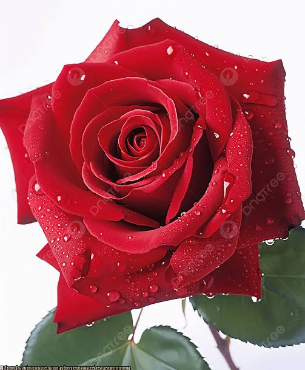

Nossas Flores
Flores
Essas flores são conhecidas por sua beleza e facilidade de cultivo.
- Rosa
- Orquídea
- Lírio



| Planta | Necessidade de Luz | Rega e Solo |
|---|---|---|
| Rosa | Sol Direto (mínimo 6 horas/dia) | Rega frequente no solo; prefere solo rico em matéria orgânica e bem drenado. |
| Lírio | Rega moderada (manter solo úmido, sem encharcar); prefere solo leve e arenoso. | |
| Orquídea | Luz Indireta ou Meia-Sombra | Rega ao secar o substrato; necessita de substrato específico (casca de pínus e fibra de coco). |
Video de orientação
Este vídeo fornece dicas valiosas sobre como cuidar de flores de jardim, incluindo informações sobre rega, luz e solo.